<title>最近の三浦</title>
<link rel="preconnect" href="https://fonts.googleapis.com">
<link rel="preconnect" href="https://fonts.gstatic.com" crossorigin>
<link href="https://fonts.googleapis.com/css2?family=Shippori+Mincho:wght@400;500;600;700&display=swap" rel="stylesheet">
<style>
:root{ --bg:#D8CFBC; --ink:#4A4238; --ink2:rgba(74,66,56,.72); --mute:rgba(74,66,56,.55); --rule:rgba(74,66,56,.85); --hair:rgba(100,80,60,.22); --box:rgba(255,250,240,.38); --cream:#F5EEE0; --latin:-apple-system,"Helvetica Neue",sans-serif; }
*{box-sizing:border-box;margin:0;padding:0}
body{font-family:"Shippori Mincho","Hiragino Mincho ProN","Yu Mincho",serif;background:var(--bg);color:var(--ink);line-height:1.85;letter-spacing:.04em;font-feature-settings:"palt";font-size:15px;overflow-x:hidden;-webkit-font-smoothing:antialiased}
/* 漆喰／紙の繊維目 */
body::before{content:"";position:fixed;inset:0;background-image:url("data:image/svg+xml;utf8,<svg xmlns='http://www.w3.org/2000/svg' width='300' height='300'><filter id='n'><feTurbulence type='fractalNoise' baseFrequency='2.8' numOctaves='2' seed='3'/><feColorMatrix values='0 0 0 0 0.4 0 0 0 0 0.35 0 0 0 0 0.3 0 0 0 0.3 0'/></filter><rect width='100%' height='100%' filter='url(%23n)'/></svg>");mix-blend-mode:multiply;opacity:.28;pointer-events:none;z-index:1}
body::after{content:"";position:fixed;inset:-5%;background-image:radial-gradient(ellipse 40% 30% at 25% 30%,rgba(150,130,100,.05),transparent 70%),radial-gradient(ellipse 35% 30% at 75% 70%,rgba(160,140,110,.04),transparent 70%);mix-blend-mode:multiply;pointer-events:none;z-index:1}
main{position:relative;z-index:2;max-width:760px;margin:0 auto;padding:18px 5vw 40px}
a{color:inherit}
.latin{font-family:var(--latin);letter-spacing:.3em;text-transform:uppercase;font-size:9px}
/* ── 題字 ── */
.masthead{border-top:4px double var(--rule);border-bottom:1px solid var(--rule);padding:14px 0 16px;display:grid;grid-template-columns:1fr auto;gap:0 22px;align-items:stretch}
.mh-l{display:flex;flex-direction:column;justify-content:space-between;min-width:0}
.issue{font-size:11px;letter-spacing:.2em;color:var(--ink2);display:flex;flex-wrap:wrap;gap:0 16px;border-bottom:1px solid var(--hair);padding-bottom:8px;margin-bottom:12px}
.issue .latin{align-self:center;opacity:.7}
.mh-lead{font-size:clamp(14px,2.4vw,16px);line-height:2;letter-spacing:.06em;max-width:30em}
.areas{font-size:11px;letter-spacing:.3em;color:var(--ink2);margin-top:12px}
.daiji{writing-mode:vertical-rl;text-orientation:upright;font-size:clamp(34px,9vw,56px);font-weight:600;letter-spacing:.18em;line-height:1;border:1px solid var(--rule);padding:14px 8px;background:var(--box);align-self:start}
/* ── 前回は ── */
.toggle{position:sticky;top:0;z-index:20;display:flex;align-items:baseline;gap:0 16px;flex-wrap:wrap;padding:10px 0;margin:0 0 22px;background:var(--bg);border-bottom:1px solid var(--rule);box-shadow:0 8px 12px -10px rgba(74,66,56,.35)}
.toggle .q{font-size:12px;letter-spacing:.25em;color:var(--ink2)}
.toggle button{font:inherit;font-size:14px;letter-spacing:.15em;background:none;border:0;color:inherit;cursor:pointer;padding:2px 0;opacity:.5;border-bottom:1.5px solid transparent}
.toggle button[aria-pressed="true"]{opacity:1;font-weight:600;border-bottom-color:currentColor}
.toggle button:focus-visible{outline:1px solid currentColor;outline-offset:3px}
/* ── 面 ── */
.men{display:flex;align-items:baseline;justify-content:space-between;border-top:1px solid var(--rule);border-bottom:3px double var(--rule);padding:6px 2px;margin:40px 0 18px;font-size:15px;font-weight:600;letter-spacing:.35em}
.men .latin{color:var(--ink2)}
.ym{font-size:11px;letter-spacing:.25em;color:var(--ink2);margin:26px 0 10px;display:flex;align-items:center;gap:10px}
.ym::after{content:"";flex:1;height:1px;background:var(--hair)}
.month:first-child .ym{margin-top:0}
/* ── 記事：段組 ── */
.cols{columns:1;column-gap:28px;column-rule:1px solid var(--hair)}
@media (min-width:600px){ .cols{columns:2} }
.art{break-inside:avoid;padding:0 0 18px;margin:0 0 18px;border-bottom:1px solid var(--hair)}
.art[hidden]{display:none}
.photo{margin:0 0 10px}
.photo img{display:block;width:100%;height:auto;max-height:180px;object-fit:cover;object-position:50% 45%;filter:saturate(.85) contrast(.95) sepia(.08)}
.photo figcaption{font-size:10px;letter-spacing:.12em;color:var(--mute);margin-top:4px;text-align:right}
.ran{display:flex;align-items:center;gap:10px;font-size:11px;letter-spacing:.15em;color:var(--ink2);margin-bottom:8px}
.box{border:1px solid var(--rule);color:var(--ink);padding:0 6px;line-height:1.6;letter-spacing:.25em;font-size:10.5px;font-weight:600}
.ago{color:var(--mute)}
h3{font-size:19px;font-weight:600;letter-spacing:.06em;line-height:1.55;margin-bottom:10px;text-wrap:balance}
.fact{font-size:14px;line-height:1.95;text-align:justify;margin-bottom:10px}
.dl{font-weight:600}
.talk{background:var(--box);border:1px solid var(--hair);padding:8px 12px;font-size:13.5px;line-height:1.9;margin-bottom:10px}
.tl{display:inline-block;font-size:10px;letter-spacing:.3em;color:var(--ink2);border-bottom:1px solid var(--hair);margin-right:10px}
.src{font-size:10px;letter-spacing:.1em;color:var(--mute);line-height:1.9}
.src .cf{letter-spacing:.25em;margin-right:10px;color:var(--ink2)}
.src a{text-decoration:none;border-bottom:1px solid var(--hair);margin-right:10px}
/* 一面 */
.art.lead{column-span:all;border-bottom:3px double var(--rule);padding-bottom:22px;margin-bottom:26px}
.art.lead .photo img{max-height:280px}
.art.lead h3{font-size:clamp(24px,6vw,32px);font-weight:700;letter-spacing:.08em;line-height:1.5}
.art.lead .fact{font-size:15.5px}
.empty{font-size:13px;color:var(--ink2);padding:8px 0}
/* ── 灯台（囲み） ── */
.df{margin:8px 0 0;border:1px solid var(--rule);padding:14px 16px;display:grid;grid-template-columns:auto 1fr;gap:2px 16px;align-items:baseline;background:var(--box)}
.df .k{font-size:12px;letter-spacing:.3em;font-weight:600;writing-mode:vertical-rl;text-orientation:upright;grid-row:1/3;border-right:1px solid var(--hair);padding-right:10px}
.df .v{font-size:clamp(18px,4.6vw,24px);letter-spacing:.1em;line-height:1.5}
.df .n{font-size:11px;letter-spacing:.15em;color:var(--ink2)}
/* ── 映像欄 ── */
.vgrid{display:grid;grid-template-columns:repeat(auto-fill,minmax(150px,1fr));gap:18px 14px}
.vid{display:block;text-decoration:none;min-width:0}
.vid:focus-visible{outline:1px solid currentColor;outline-offset:3px}
.vthumb{position:relative;aspect-ratio:16/9;background:var(--hair);overflow:hidden;border:1px solid var(--hair)}
.vthumb img{display:block;width:100%;height:100%;object-fit:cover;filter:saturate(.85) contrast(.95) sepia(.08)}
.live{position:absolute;left:0;top:0;background:var(--ink);color:var(--cream);font-size:9px;letter-spacing:.3em;padding:1px 6px 1px 8px}
.vtitle{font-size:12.5px;line-height:1.6;margin-top:6px;display:-webkit-box;-webkit-line-clamp:2;-webkit-box-orient:vertical;overflow:hidden}
.vmeta{font-size:10px;letter-spacing:.1em;color:var(--mute);margin-top:2px;white-space:nowrap;overflow:hidden;text-overflow:ellipsis}
/* ── 奥付 ── */
.okuzuke{margin-top:44px;border-top:3px double var(--rule);padding-top:12px;font-size:11px;letter-spacing:.15em;line-height:2;color:var(--ink2)}
.okuzuke .latin{display:block;margin-top:8px;opacity:.7}
</style>
<main>
<header class="masthead">
  <div class="mh-l">
    <div class="issue"><span>第1号</span><span>2026年9月12日（土）</span><span class="latin">Miura A-tei · Kinkyo</span></div>
    <p class="mh-lead">城ヶ島、三崎、三浦海岸——<br>この町で起きたこと、はじまったこと、季節のこと。</p>
    <div class="areas">城ヶ島 · 三崎 · 三浦海岸 · 油壺 · 小網代</div>
  </div>
  <h1 class="daiji">最近の三浦</h1>
</header>
<nav class="toggle" role="group" aria-label="前回来てから"><span class="q">前回のご来訪は</span><button data-days="31">一ヶ月前</button><button data-days="93">三ヶ月前</button><button data-days="184">半年前</button><button data-days="366">一年前</button></nav>
<div id="dated">
<div class="month" data-month="2026-10"><h2 class="ym">2026年10月</h2><div class="cols"><article class="art" data-age="-21">
  <figure class="photo">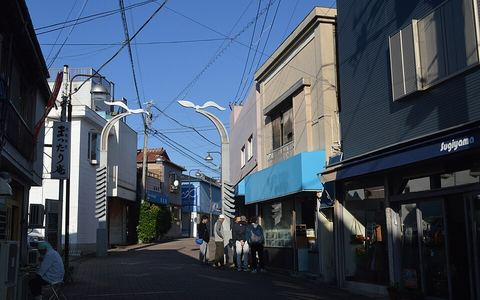<figcaption>三崎下町商店街</figcaption></figure>
  <div class="ran"><span class="box">イベント</span><span class="dt">10/3(土)〜10/4(日)　<span class="ago">21日後</span></span></div>
  <h3>みうら夜市 10/3・4、下町が灯ろうで灯る</h3>
  <p class="fact"><b class="dl">【三崎】</b>第18回 みうら夜市〜灯ろうナイトウォーク〜 10/3(土)・4(日) 16:00〜21:00。三崎下町商店街（三崎銀座通り・入船すずらん通り・日の出通り）</p>
  <aside class="talk"><span class="tl">話のタネ</span>下町の通り500mが屋台と灯ろうで埋まります。夕方から</aside>
  <p class="src"><span class="cf">出典確認</span><a href="https://miura-info.ne.jp/18miurayoichi/" target="_blank" rel="noopener">みうら観光ガイド（三浦市観光協会）7/30</a></p>
</article></div></div>
<div class="month" data-month="2026-09"><h2 class="ym">2026年9月</h2><div class="cols"><article class="art" data-age="-7">
  <figure class="photo"><figcaption>三浦海岸ビールまつり（号外NET）</figcaption></figure>
  <div class="ran"><span class="box">イベント</span><span class="dt">9/19(土)〜9/23(水)　<span class="ago">7日後</span></span></div>
  <h3>三浦海岸駅前でビールまつり 9/19〜23</h3>
  <p class="fact"><b class="dl">【三浦海岸】</b>三浦海岸ビールまつり 9/19(土)〜23(水祝) 11:00〜19:00（最終日17:00）。三浦海岸駅前の線路下スペース UMICO。クラフトビール日替わり10社、同時にトラック市</p>
  <aside class="talk"><span class="tl">話のタネ</span>駅前で飲めます。入場無料</aside>
  <p class="src"><span class="cf">出典確認</span><a href="https://yokosuka.goguynet.jp/2026/09/07/miurakaigan-beermatsuri2026-09/" target="_blank" rel="noopener">号外NET 横須賀・三浦 9/7</a></p>
</article><article class="art" data-age="3">
  <figure class="photo">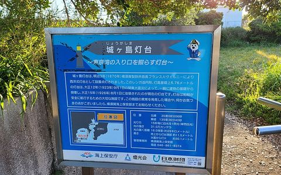<figcaption>城ヶ島灯台</figcaption></figure>
  <div class="ran"><span class="box">出来事</span><span class="dt">9/9(水)　<span class="ago">3日前</span></span></div>
  <h3>城ヶ島の磯で小5男児が高波にさらわれ死亡</h3>
  <p class="fact"><b class="dl">【城ヶ島】</b>城ヶ島灯台の南約250mの岩場で磯遊び中の小学生4人が高波にさらわれ、小5男児（10）が行方不明に。翌10日朝、岩場西側の沖合で発見され死亡が確認された（報道時点で身元確認中）</p>
  <aside class="talk"><span class="tl">話のタネ</span>灯台の南側の磯です。波がある日は磯に降りないよう一言添えられます</aside>
  <p class="src"><span class="cf">出典確認</span><a href="https://news.yahoo.co.jp/articles/45f0e2361e5c2ba05224cb75a4731e58704cc76b" target="_blank" rel="noopener">朝日新聞（Yahoo!ニュース）9/9</a>／<a href="https://news.livedoor.com/article/detail/32287612/" target="_blank" rel="noopener">ライブドアニュース（TBS）9/10</a></p>
</article></div></div>
<div class="month" data-month="2026-04"><h2 class="ym">2026年4月</h2><div class="cols"><article class="art" data-age="147">
  <figure class="photo">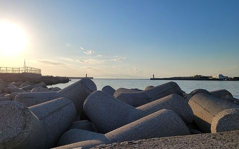<figcaption>城ヶ島漁港</figcaption></figure>
  <div class="ran"><span class="box">店</span><span class="dt">4/18(土)　<span class="ago">4ヶ月前</span></span></div>
  <h3>城ヶ島に鮮魚直売「おさかな市場」開店</h3>
  <p class="fact"><b class="dl">【城ヶ島】</b>「城ヶ島おさかな市場」オープン（三崎観光＝京急グループ）。城ヶ島500-28、バス停「城ヶ島漁港前」徒歩1分。10:00〜18:00、火曜定休。城ヶ島・三崎で揚がった鮮魚と加工品、土産</p>
  <aside class="talk"><span class="tl">話のタネ</span>島に鮮魚の直売所ができました。火曜は休みなので注意</aside>
  <p class="src"><span class="cf">出典確認</span><a href="https://www.keikyu.co.jp/company/news/2026/20260416HP_25007RK.html" target="_blank" rel="noopener">京急電鉄 ニュースリリース 4/16</a></p>
</article></div></div>
<div class="month" data-month="2026-02"><h2 class="ym">2026年2月</h2><div class="cols"><article class="art" data-age="197">
  <figure class="photo">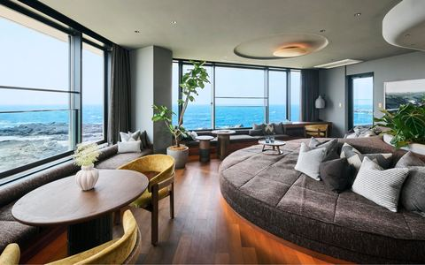<figcaption>ふふ 城ヶ島（公式サイト）</figcaption></figure>
  <div class="ran"><span class="box">店</span><span class="dt">2/27(金)　<span class="ago">6ヶ月前</span></span></div>
  <h3>島に温泉旅館「ふふ 城ヶ島」開業</h3>
  <p class="fact"><b class="dl">【城ヶ島】</b>「ふふ 城ヶ島 海風のしらべ」2/27開業（城ヶ島693、34室）。全室オーシャンビュー・全室に油壺温泉、日本料理、ルーフトップバー、シーカヤック。2食付き2名1室 99,000円〜</p>
  <aside class="talk"><span class="tl">話のタネ</span>島に高級旅館ができました。日帰りは不可のはず、会員さんの反応が楽しみな話題</aside>
  <p class="src"><span class="cf">出典確認</span><a href="https://www.fufujogashima.jp/" target="_blank" rel="noopener">ふふ 城ヶ島 公式</a>／<a href="https://hotelbank.jp/new-hotels/kanagawa-fufujogashima-2602open/" target="_blank" rel="noopener">HotelBank 3/13</a></p>
</article></div></div>
<p class="empty" id="none" hidden>この期間に新しい記事はありません。下の「これから」を話題にどうぞ。</p>
</div>
<div class="df"><span class="k">次の灯台</span><span class="v">ダイヤモンド富士　5/1(土)頃（231日後）</span><span class="n">城ヶ島大橋から。西北西85km先の富士に日が沈む。年により前後（要確認）</span></div>
<h2 class="men">これから<span class="latin">Coming up · 120 days</span></h2>
<div class="cols"><article class="art small">
  <figure class="photo"><figcaption>三崎下町商店街</figcaption></figure>
  <div class="ran"><span class="box">イベント</span><span class="dt">10/3(土)頃　<span class="ago">21日後</span></span></div>
  <p class="fact">みうら夜市（三崎下町商店街）。10月最初の土日</p>
  <aside class="talk"><span class="tl">話のタネ</span>下町の通りが屋台で埋まります</aside>
  <p class="src"><span class="cf">要確認</span><a href="https://miura-info.ne.jp/find/イベントカレンダー/" target="_blank" rel="noopener">みうら観光ガイド イベントカレンダー</a></p>
</article><article class="art small">
  
  <div class="ran"><span class="box">季節</span><span class="dt">10/15(木)頃　<span class="ago">33日後</span></span></div>
  <p class="fact">三浦みかん狩り 開園（10月中旬〜11月下旬）</p>
  <aside class="talk"><span class="tl">話のタネ</span>帰りに寄れます。園によって開園日が違うので要確認</aside>
  <p class="src"><span class="cf">要確認</span><a href="https://miura-info.ne.jp/find/イベントカレンダー/" target="_blank" rel="noopener">みうら観光ガイド イベントカレンダー</a></p>
</article><article class="art small">
  <figure class="photo">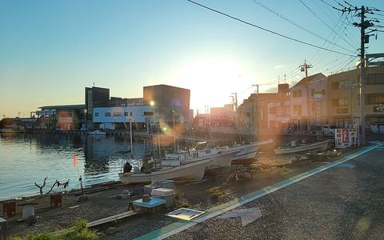<figcaption>三崎港</figcaption></figure>
  <div class="ran"><span class="box">イベント</span><span class="dt">11/1(日)頃　<span class="ago">50日後</span></span></div>
  <p class="fact">三崎港町まつり＋三崎・城ヶ島花火大会（10月下旬〜11月上旬の日曜）</p>
  <aside class="talk"><span class="tl">話のタネ</span>マグロ尽くしの日。花火は20分ほどですが港と島どちらからも見えます</aside>
  <p class="src"><span class="cf">要確認</span><a href="https://miura-info.ne.jp/find/イベントカレンダー/" target="_blank" rel="noopener">みうら観光ガイド イベントカレンダー</a></p>
</article><article class="art small">
  
  <div class="ran"><span class="box">イベント</span><span class="dt">11/5(木)頃　<span class="ago">54日後</span></span></div>
  <p class="fact">面神楽（海南神社 神楽殿）11月上旬</p>
  <aside class="talk"><span class="tl">話のタネ</span>三崎の古い神楽。夜に見られます</aside>
  <p class="src"><span class="cf">要確認</span><a href="https://miura-info.ne.jp/find/イベントカレンダー/" target="_blank" rel="noopener">みうら観光ガイド イベントカレンダー</a></p>
</article><article class="art small">
  <figure class="photo"><figcaption>三崎港</figcaption></figure>
  <div class="ran"><span class="box">イベント</span><span class="dt">12/29(火)　<span class="ago">108日後</span></span></div>
  <p class="fact">三崎朝市 年末特別セール（12/29・30）</p>
  <aside class="talk"><span class="tl">話のタネ</span>年末は朝市が特別体制です</aside>
  <p class="src"><span class="cf">要確認</span><a href="https://miura-info.ne.jp/find/イベントカレンダー/" target="_blank" rel="noopener">みうら観光ガイド イベントカレンダー</a></p>
</article></div>
<h2 class="men">映像欄<span class="latin">YouTube</span></h2>
<div class="vgrid"><a class="vid" href="https://www.youtube.com/watch?v=58k-G71oqaY" target="_blank" rel="noopener">
  <div class="vthumb">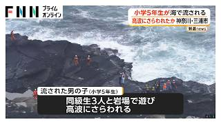</div>
  <div class="vtitle">海で流され小学5年生男児行方不明 同級生3人と岩場で遊び高波にさらわれたか ライフジャケット着用せず 神奈川・三浦市（2026年09月09日）</div>
  <div class="vmeta">FNNプライムオンライン　今日</div>
</a><a class="vid" href="https://www.youtube.com/watch?v=49NubJ78KWU" target="_blank" rel="noopener">
  <div class="vthumb">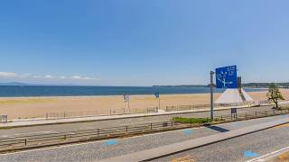<span class="live">生中継</span></div>
  <div class="vtitle">【LIVE】三浦海岸ライブカメラ(Live Camera in Miura Beach)</div>
  <div class="vmeta">WITH SEA　配信中</div>
</a><a class="vid" href="https://www.youtube.com/watch?v=-GR4ixt15FM" target="_blank" rel="noopener">
  <div class="vthumb">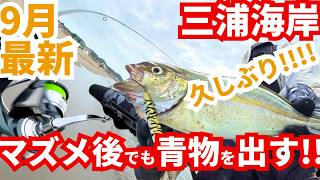</div>
  <div class="vtitle">【9月最新!】青物キタｱｱｱ!!!!こうやって釣る！神奈川サーフで秋の釣り調査! #東京湾 #三浦半島 #三浦海岸 #青物 #ショゴ #イナダ #ブリ #マゴチ  #ヒラメ #fishing #海釣り</div>
  <div class="vmeta">なっしぃの釣り研究　今日</div>
</a><a class="vid" href="https://www.youtube.com/watch?v=AwbW62qvovk" target="_blank" rel="noopener">
  <div class="vthumb">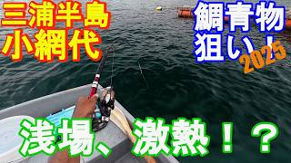</div>
  <div class="vtitle">♯382【小網代ボート釣り】鯛・青物狙い！夏の浅場はポイント×釣り方次第で絶好調！？</div>
  <div class="vmeta">ボート釣り名人万ちゃんの釣り美学　今日</div>
</a><a class="vid" href="https://www.youtube.com/watch?v=8sOjuttS_lU" target="_blank" rel="noopener">
  <div class="vthumb"></div>
  <div class="vtitle">【神奈川･城ヶ島】海に流され行方不明の小5男児(10)   10日朝沖合で発見も死亡</div>
  <div class="vmeta">日テレNEWS　2日前</div>
</a><a class="vid" href="https://www.youtube.com/watch?v=93HE0SCgP0M" target="_blank" rel="noopener">
  <div class="vthumb">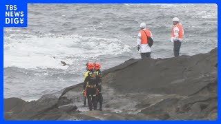</div>
  <div class="vtitle">【速報】行方不明の小学5年生の男児　海に沈んでいるのを発見、搬送も死亡　神奈川・三浦市｜TBS NEWS DIG</div>
  <div class="vmeta">TBS NEWS DIG Powered by JNN　2日前</div>
</a><a class="vid" href="https://www.youtube.com/watch?v=XueQiMHY57c" target="_blank" rel="noopener">
  <div class="vthumb">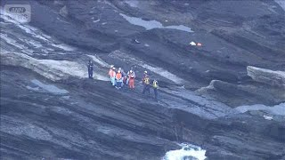</div>
  <div class="vtitle">「小学生の子どもが流された」 神奈川・三浦市の海岸で小5男児が高波に流されたか【スーパーJチャンネル】(2026年9月9日)</div>
  <div class="vmeta">ANNnewsCH　2日前</div>
</a><a class="vid" href="https://www.youtube.com/watch?v=k_TCWdV2Org" target="_blank" rel="noopener">
  <div class="vthumb">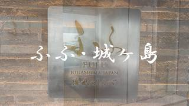</div>
  <div class="vtitle">ふふ・城ヶ島・絶景ホテル紹介・ラグジュアリー客室露天風呂付部屋</div>
  <div class="vmeta">あんドーナツ　10日前</div>
</a><a class="vid" href="https://www.youtube.com/watch?v=82uzirc5S6w" target="_blank" rel="noopener">
  <div class="vthumb">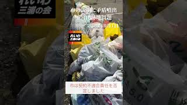</div>
  <div class="vtitle">【続報】下宮田跡地農地返還問題【三浦市】#三浦市 #出口嘉一 #れいわ三浦の会</div>
  <div class="vmeta">れいわ三浦の会　11日前</div>
</a><a class="vid" href="https://www.youtube.com/watch?v=LUmDNs7ffJo" target="_blank" rel="noopener">
  <div class="vthumb"></div>
  <div class="vtitle">【夏の絶景中継】天達が行く！城ヶ島公園 ミシュラン二つ星の景色！360度の大パノラマからお届け【ノンストップ！】</div>
  <div class="vmeta">ノンストップ!公式ch.　14日前</div>
</a><a class="vid" href="https://www.youtube.com/watch?v=UjypldXCOvQ" target="_blank" rel="noopener">
  <div class="vthumb">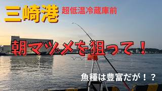</div>
  <div class="vtitle">【釣り】仕掛けが大事なのがよくわかる動画！三崎港釣行でウルメイワシと格闘。</div>
  <div class="vmeta">channelハナモゲラ　21日前</div>
</a><a class="vid" href="https://www.youtube.com/watch?v=lpHOCGUfDRU" target="_blank" rel="noopener">
  <div class="vthumb"></div>
  <div class="vtitle">三浦海岸駅の今と昔【京急線】【国道１３４号線】【三浦市】【街の移り変わり】【懐かしい景色】【遠い記憶】【町の歴史】【あの頃の思い出】Miurakaigan Station Then and Now</div>
  <div class="vmeta">そう遠くない未来過去 / The not-too-distant past and future　21日前</div>
</a><a class="vid" href="https://www.youtube.com/watch?v=J6uqGlBzPus" target="_blank" rel="noopener">
  <div class="vthumb"></div>
  <div class="vtitle">京急油壺マリンパーク跡地と西海岸線を行く。</div>
  <div class="vmeta">ウナ蔵 / Unazo&#x27;s Totsuka Life Japan　21日前</div>
</a><a class="vid" href="https://www.youtube.com/watch?v=KRjG4x4t-qM" target="_blank" rel="noopener">
  <div class="vthumb"></div>
  <div class="vtitle">【三崎港食べ歩き】マグロ・海鮮・カフェまで絶品グルメ7選</div>
  <div class="vmeta">孤独の旅人【心の充電を満たす瞬間】　1ヶ月前</div>
</a><a class="vid" href="https://www.youtube.com/watch?v=aOmVD7PWZQA" target="_blank" rel="noopener">
  <div class="vthumb"></div>
  <div class="vtitle">【小網代の森】首都圏に残る奇跡の自然を歩く｜森から海へ、のんびり散策</div>
  <div class="vmeta">とことこ山日和　1ヶ月前</div>
</a><a class="vid" href="https://www.youtube.com/watch?v=bC1DKvCoWw0" target="_blank" rel="noopener">
  <div class="vthumb">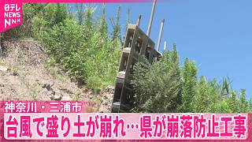</div>
  <div class="vtitle">【盛り土が崩落】先月の台風で道路などに土砂流出  県が崩落防止工事を開始  神奈川･三浦市</div>
  <div class="vmeta">日テレNEWS　1ヶ月前</div>
</a><a class="vid" href="https://www.youtube.com/watch?v=zQmg9KAT3OU" target="_blank" rel="noopener">
  <div class="vthumb">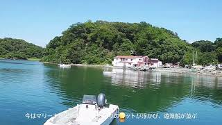</div>
  <div class="vtitle">小網代湾の中心で回ってみた！</div>
  <div class="vmeta">佐藤デビット　1ヶ月前</div>
</a><a class="vid" href="https://www.youtube.com/watch?v=3jKrUcgRHFU" target="_blank" rel="noopener">
  <div class="vthumb">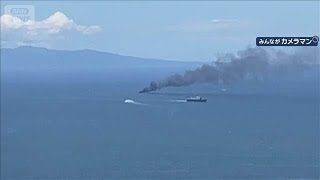</div>
  <div class="vtitle">【速報】神奈川・三浦市沖で炎上の釣り船が沈没　全員避難してけが人なし(2026年7月19日)</div>
  <div class="vmeta">ANNnewsCH　1ヶ月前</div>
</a><a class="vid" href="https://www.youtube.com/watch?v=DXZZUH2P99w" target="_blank" rel="noopener">
  <div class="vthumb">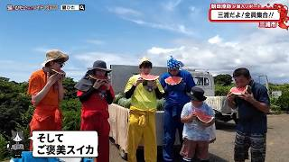</div>
  <div class="vtitle">猫のひたいほどワイド #1766 潜入リポート・朝田淳弥「猫ひた夏の風物詩！？三浦だよ！全員集合！！」（三浦市）</div>
  <div class="vmeta">テレビ神奈川 tvk3ch　1ヶ月前</div>
</a><a class="vid" href="https://www.youtube.com/watch?v=R7WMtOkdnNE" target="_blank" rel="noopener">
  <div class="vthumb">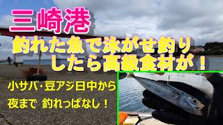</div>
  <div class="vtitle">【三崎港】釣れた魚で泳がせ釣り、高級食材が！サバ、アジは夜まで釣れっぱなし！</div>
  <div class="vmeta">やし50　2ヶ月前</div>
</a></div>
<footer class="okuzuke">
出典確認＝記事を開いて確かめたもの／要確認＝一次でない・「頃」／伝聞＝聞いた話<br>
写真：Wikimedia Commons（jogashima_lighthouse CC0 · jogashima_bridge_sunset CC BY 3.0 · jogashima_harbor CC0 · misaki_harbor CC0 · misaki_shitamachi CC BY-SA 4.0 · miura_beach CC0）、出典記事の og:image、YouTube のサムネイル
<span class="latin">Since 2026.09.12 · Updated every morning · By Yanuki</span>
</footer>
</main>
<script>
(function(){
  var btns=[].slice.call(document.querySelectorAll('.toggle button'));
  var arts=[].slice.call(document.querySelectorAll('#dated .art'));
  var months=[].slice.call(document.querySelectorAll('#dated .month'));
  var none=document.getElementById('none');
  function apply(days){
    btns.forEach(function(b){b.setAttribute('aria-pressed',String(+b.dataset.days===days));});
    var shown=0, first=null;
    arts.forEach(function(el){var ok=+el.dataset.age<=days;el.hidden=!ok;el.classList.remove('lead');if(ok){shown++;if(!first)first=el;}});
    if(first)first.classList.add('lead');
    months.forEach(function(m){m.hidden=![].some.call(m.querySelectorAll('.art'),function(el){return !el.hidden;});});
    none.hidden=shown>0;
    try{localStorage.setItem('miura-days',days);}catch(e){}
  }
  btns.forEach(function(b){b.addEventListener('click',function(){apply(+b.dataset.days);});});
  var init=93; try{init=+localStorage.getItem('miura-days')||93;}catch(e){}
  apply(init);
})();
</script>
